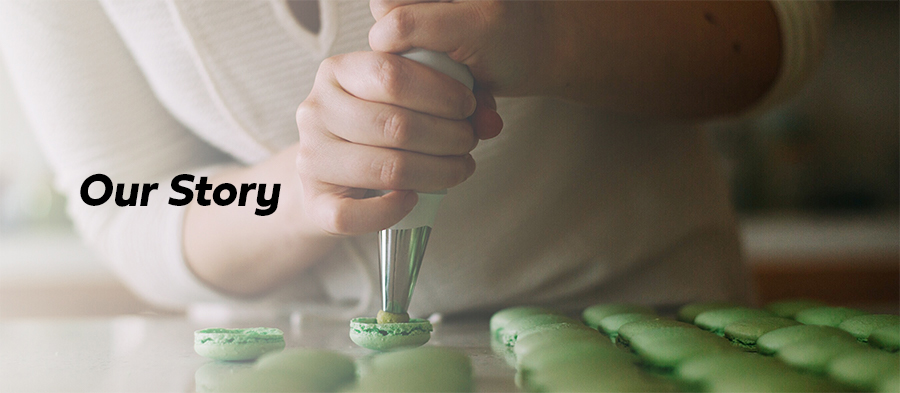

How it all started
Warner’s Macarons was just an idea a year ago.
We’ve always loved watching cooking and baking competition shows. It was only when we decided to put our skills to the test when we discovered a true passion and skill for baking these tricky treats.
Baking macarons is certainly both an art and a talent that requires plenty of patience.
Fast forward a year later and we’ve created an incredible menu of tasty hand-crafted French macarons.